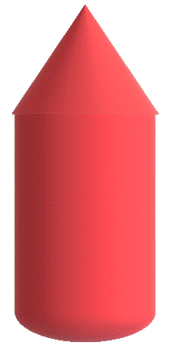

VERIFICATION NEEDED
TO ALLOW YOUR FIRST CHANGE TO THIS VEHICLE, FOLLOW THE STEPS BELOW
Determining vehicle type.....

P
R
N
F
Follow these instructions
Ask me later
Is this hepful ? If not,
try another way